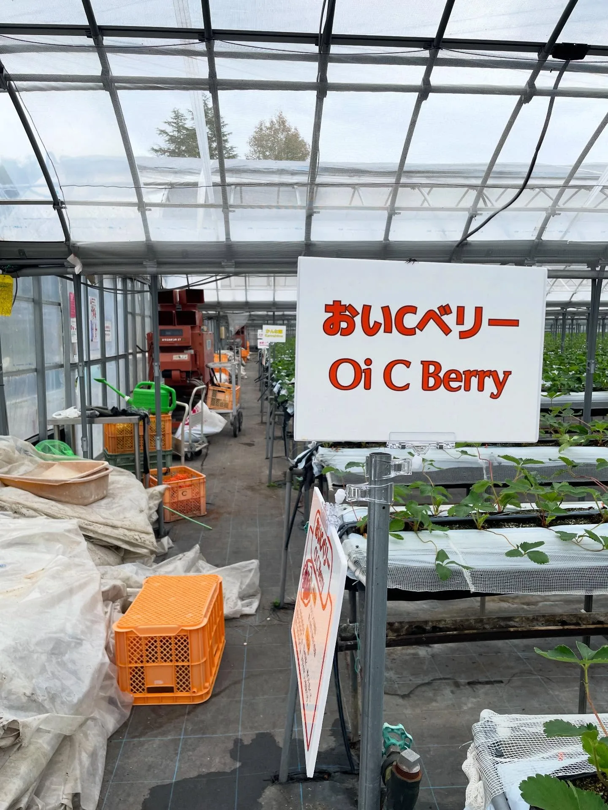
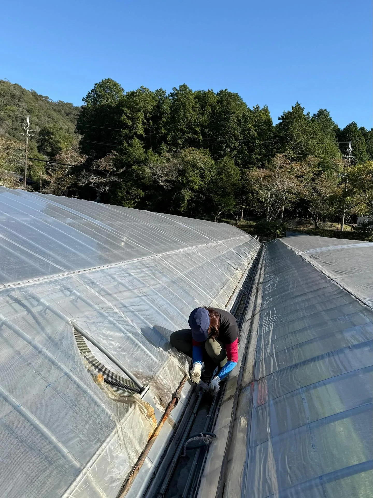
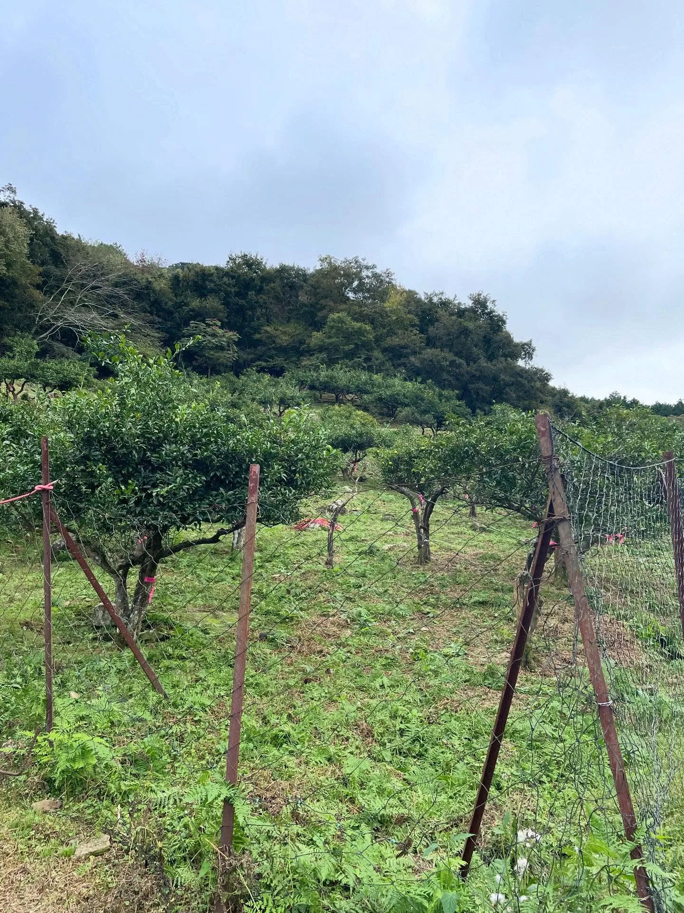
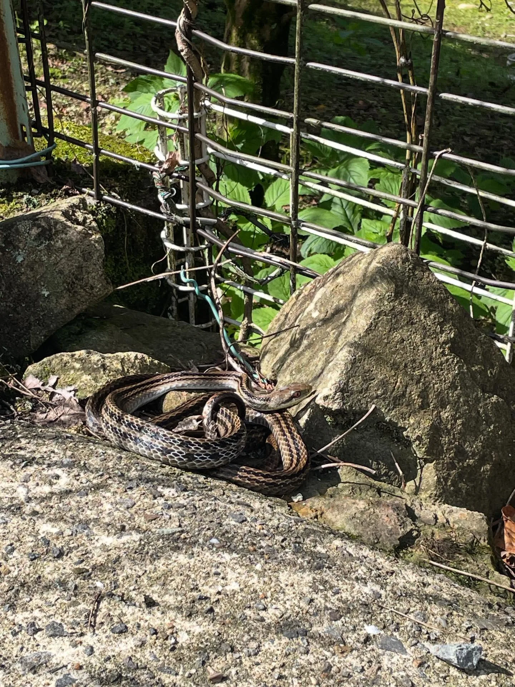
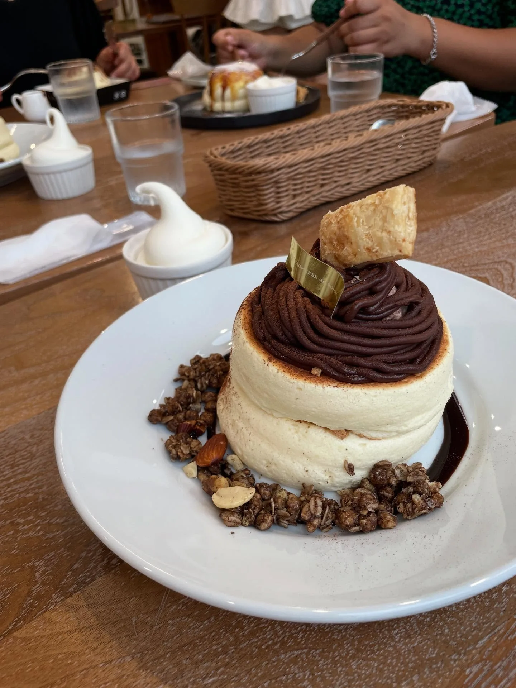
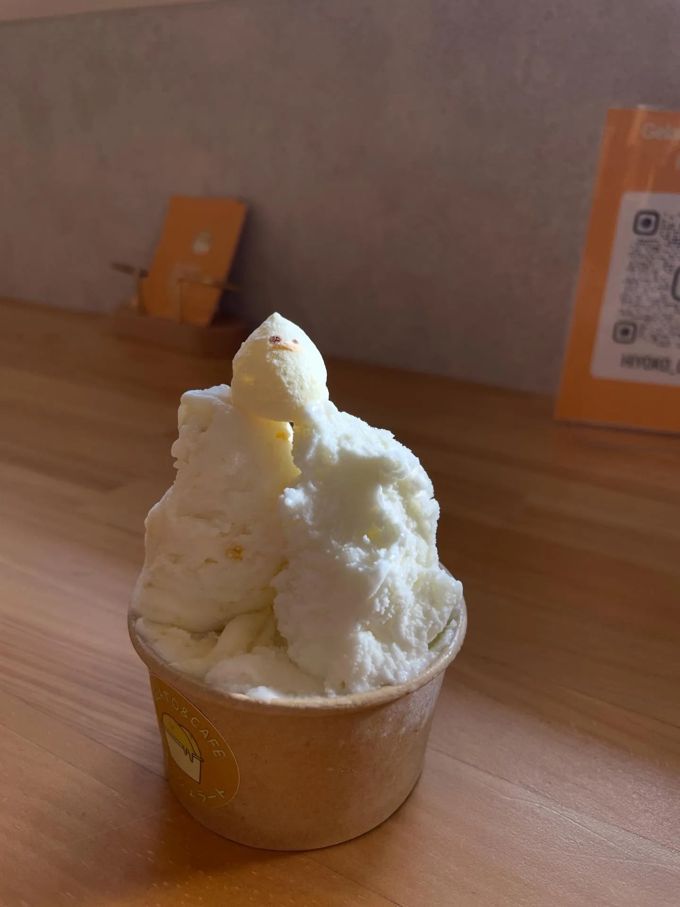
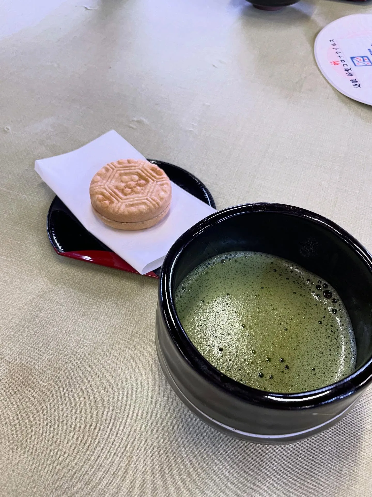
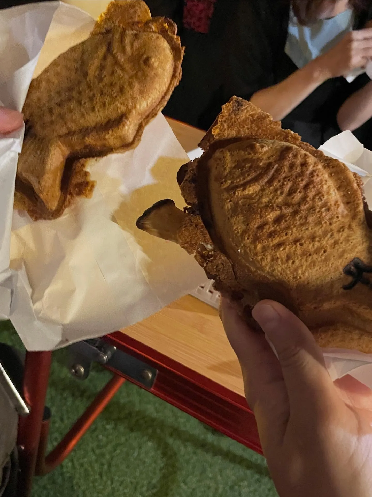
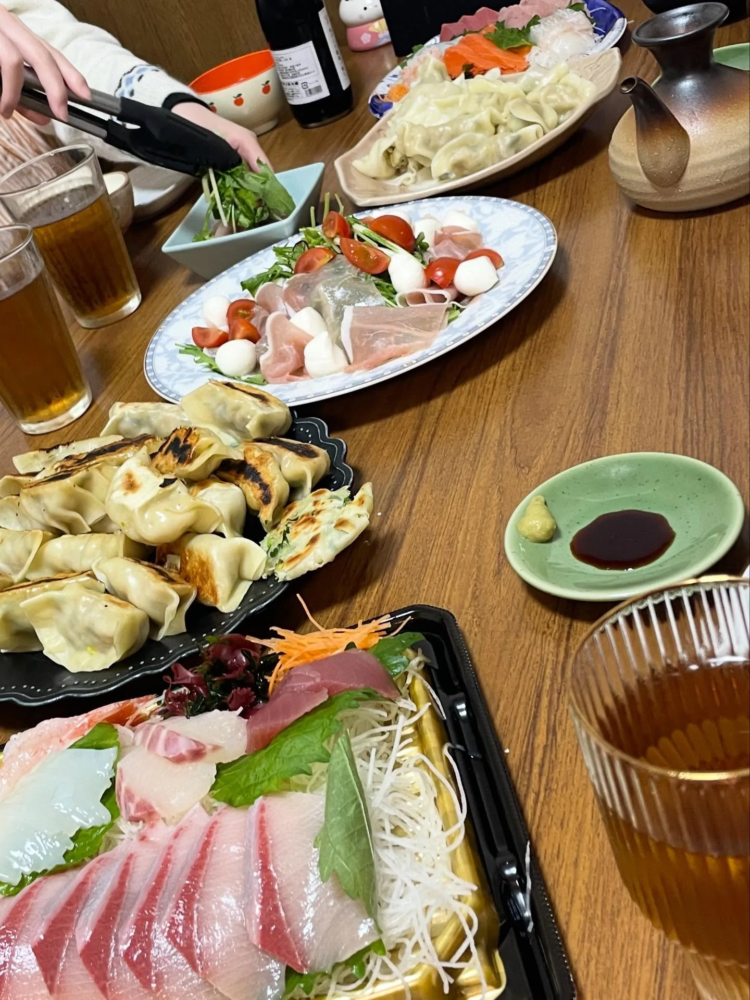
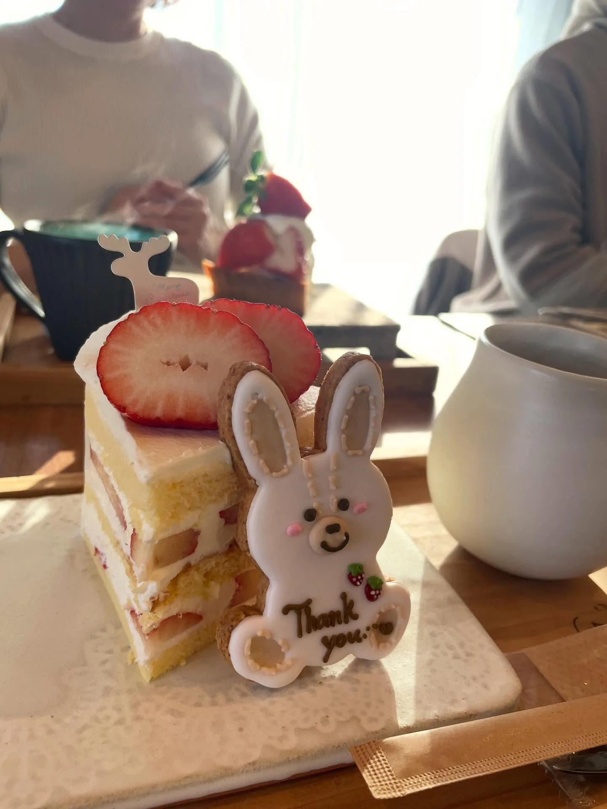

打工換宿：姬路近郊的草莓園，十月沒有草莓
真正的換宿，第二次！
這一個月我在姬路的草莓觀光農場（就是採草莓那種！）換宿，距離姬路車站車程僅 25 分鐘，是我換宿待過最市區的地方了，但居然在農場旁的路邊遇到鹿……！

公寓型的宿舍
住所是公寓型的 2LDK，完全的西式風格，每個房間住兩個人，因此最多可能有 4 個人；隔音的部分就是完全的日式風格了哈哈，印象中我曾在客廳使用電腦時，吵到房間睡覺的室友。我停留期間約有半個月住 3–4 人。
由於我是社交能量耗盡來到這裡，真的連尬聊的力氣都沒有，沒特別和其他換宿的人交上朋友，只有第一個星期和中國人室友多聊上幾句。
關於工作
每週工作 5 天，每天 5 小時（07:00–12:00），6 點就得起床。對我這隻長年夜貓沒那麼容易適應，不過工作偏靜態、又很安靜，有一種在工作中緩慢醒過來的感覺，並不覺得特別辛苦或痛苦。雖然是迷你的自我觀察，但很喜歡又多認識自己一點點的感覺。
工作是在溫室。10 月的氣溫有些熱，但都不至於難熬，甚至後來入秋溫差變大，早上出門時最低只有 7 度，我還覺得溫室內比較暖，真是太好了。
小時候採草莓的印象中，草莓大多是種在地上，我第一次見到高架種植的草莓：成本雖然比較高、工作量也較多，但工作者可以站著工作，不得不說滿友善的。主要工作內容是摘除老葉、除雜草、去除走莖，其次還有做過固定塑膠布、定植、掃地、幼苗容器的清洗和收納、布棚加固……等等。

除了我們這些換宿者，草莓園共有 7 位左右的正式員工（並非全部都是正職，也有不同工作天數的契約工），有年長者（50–60 歲？）也有年輕人（20 歲～）。大家休息時不太聊天，工作時也很少聊天（並非規定不能聊天哦，偶爾還是會聽到年長員工們聊天），整體氛圍很安靜、沒有社交壓力。雖然跟正職員工沒怎麼講到話（日文能力有限也是一大原因），但工作當中偶爾的小小互動，也能感覺到他們的友善。
另外，我也很喜歡時間到就休息這樣的制度化：9 點會準時休息半小時，如果天氣太熱，11點還會休一個約15分鐘的water break。不會有「某人藉由多做一點來刻意表現，同時造成他人壓力」的情況，也不會被老闆多凹工作時數。（台灣社畜創傷，居然在這裡得到了「把我當人」的尊重）
我很喜歡這段時光，應該是因為當時的我真的需要停一停。手裡一邊做著重複性的勞動，一邊自我對話、想想過去所經驗的事和收穫心得，還可以停下來用手機做一下筆記。沒什麼東西可想時，就讓腦袋放空或者聽 podcast 度過。對我這種腦子總是動得不停、不習慣放空的人很好，而且勞動仍然有成果產出。
柚子園、蛇蛇與 Host Leon
除了草莓園，還去了 Host Leon 的柚子園幫忙一兩次。柚子樹是種在斜坡上，不是很好行動，加上主要是除草和除蜘蛛網，這才比較符合我對農業工作辛苦勞動的印象（欸）。也是第一次知道柚子樹的枝條有著像玫瑰的硬尖刺，跟甜甜柚子酒的印象有點落差（？）。中午出去吃飯時，還在農園路邊看到蛇蛇曬太陽，吃完飯回來牠還在原地！太愜意了吧！
日本的柚子（ゆず）跟台灣認知的柚子不太一樣，完全不是適合剝開生吃的東西。在日本如果要找台灣認知的柚子，要找「文旦（ぶんたん）」。再提，後來秋冬吃了很多橘子，有些品種反而更像我們認知的柚子，白絡會苦不能吃啊～～


工作之外，Leon 平時跟換宿者住在同一棟公寓，角色有點像是我們的保母哈哈！他是載我們去上班跟回公寓的娃娃車司機，也會替我們準備食材。無論是農業知識還是個人經歷（Leon不是日本人），各種想知道的都可以和他聊；他也會邀請我們一起吃飯、參加活動，分享各種資訊。很幸運最後幾天能搭到他的帥車 Land Rover Defender，這真是我此生搭過最帥的車了！肉眼可見的帥！


福田さん一家
農場主人福田さん一家也非常友善！福田さん的太太來農場帶我們體驗抹茶，還帶我們一起去海邊走走、看祭典、吃鯛魚燒，後來有段時間換宿的人只剩下我，還去了他家一起吃晚餐、去市集、去別的祭典等等，留下很棒的回憶。


以下兩場祭典，都是和福田さん一家一起去的：
10/19 富嶋神社－秋季例祭：たつの市的地方祭典，有五個地區參與，不同年齡層分工合作。最開始有小朋友神轎，非常可愛。資料說有獅子舞，不過當時沒看到就離開了～
11/2 相生天満神社－秋季例祭：相生市的地方祭典，各町會有兩人一組、輪流跳舞步不同的「獅子舞」，小孩也會輪流參與奏樂。沒有表演的小孩會繼續待在舞台上，結果有小孩等到打瞌睡，會有大人從台下去推推他們的背，超級可愛！日本人和我提及台灣的獅子舞，他們覺得台灣的獅子很可愛 XD
十一月底回訪：DIY 大阪燒
後來 11 月底我回到姬路兩天，除了回農場看草莓、吃草莓，福田さん還特別帶我去可以自己做大阪燒的店！
起因是某次和福田さん一家吃飯時，他們帶我去姬路知名的連鎖鐵板燒餐廳「喃風」，桌面上一個大鐵板佔據了大部分空間；我提起了 DIY 大阪燒，才知道這類型的店其實並不常見。後來他們特地帶我去真正可以 DIY 大阪燒的餐廳，真的超感謝～～
另外，我還和他們一家人一起吃晚餐，也去了用農場的草莓做甜點的熱門咖啡廳；離開的那個晚上，他們還陪我走去車站送我，真的超感動～～～（隱私因素，就沒提其他人的名字，但他們一家人的名字都跟好天氣有關，好喜歡好可愛 XD）


備忘
- 後來才查到，那天吃的是一間將近 40 年的老字號大阪燒店「こめはち（Komehachi，米八）」，位於姬路市網干區。
- 「喃風」：於姬路發跡的連鎖鐵板燒餐廳，有著著名的獨創料理「どろ焼」，口感軟軟爛爛，切下一塊後要先泡入高湯再吃，很特別的料理！
受到多方照顧的 10 月，充滿感謝！
延伸閱讀：〈日本打工度假的一年：出發前的準備、支出花費，和不打工的生活方式〉（2026-08-31）
關鍵字兵庫姬路打工換宿草莓觀光農場柚子園DIY大阪燒地方祭典獅子舞
留言
電子郵件不會公開，只用來辨識留言者。第一次留言會先經過審核，之後同一個電子郵件的留言會直接顯示。本留言區以 Cloudflare Turnstile 防止垃圾留言。